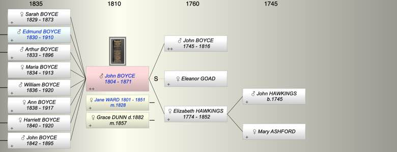
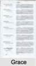
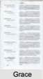

| [Index] |
| John BOYCE (1804 - 1871) |
| Clockmaker |
|  |
 

|
| b. 20 Jul 1804 at Cockington, Devon |
| m. (1) 02 Dec 1828 Jane WARD (1801 - 1851) at Shaldon, Devon |
| m. (2) 16 Mar 1857 Grace DUNN ( - 1882) at St Mary Major, Exeter. |
| d. 19 Dec 1871 at Teignmouth, Devon aged 67 |
| Near Relatives of John BOYCE (1804 - 1871) | ||||||
| Relationship | Person | Born | Birth Place | Died | Death Place | Age |
| Grandfather | John HAWKINGS | abt 1745 | ||||
| Grandmother | Mary ASHFORD | |||||
| Father in Law | William Coas WARD | 1769 | Wolborough, Devon | 1847 | 78 | |
| Mother in Law | Ann SHALDON | 1769 | E. Teignmouth | |||
| Father in Law | Richard DUNN | |||||
| Mother in Law | Martha Bazzil (Basil) | Y | ||||
| Father | John BOYCE | 1745 | 1816 | Torquay | 71 | |
| Mother | Elizabeth HAWKINGS | 1774 | Diptford, Devon | 13 Aug 1852 | 78 | |
| Step Mother | Eleanor GOAD | |||||
| Self | John BOYCE | 20 Jul 1804 | Cockington, Devon | 19 Dec 1871 | Teignmouth, Devon | 67 |
| Wife | Jane WARD | 1801 | 27 Jan 1851 | 50 | ||
| Wife | Grace DUNN | 15 Nov 1882 | East Teignmouth | |||
| Daughter | Sarah Jane BOYCE | 05 Jan 1829 | Shaldon | 1873 | 44 | |
| Son | Edmund William John BOYCE | 06 Dec 1830 | Shaldon, Devon | 1910 | 80 | |
| Son | Arthur BOYCE | 30 Jan 1833 | Shaldon, Devon | 14 Oct 1896 | 63 | |
| Daughter | Maria BOYCE | 30 Jan 1834 | Shaldon | 1913 | 79 | |
| Son | William Ward BOYCE | 17 Oct 1836 | Shaldon, Devon | 20 Apr 1920 | 83 | |
| Daughter | Ann Ward BOYCE | 15 Mar 1838 | Shaldon, Devon | 1917 | 79 | |
| Daughter | Harriett Jane BOYCE | 21 Nov 1840 | Shaldon, Devon | 1920 | Wolverhampton | 80 |
| Son | John Hawkings BOYCE | 20 Nov 1842 | Shaldon/Teignmouth | 14 Oct 1895 | Mortonhampstead | 52 |
| Sister | Elizabeth BOYCE | 13 Feb 1803 | Cockington, Devon | 1845 | Tormorham | 42 |
| Sister | Mary BOYCE | 1806 | Cockington, Devon | 06 May 1806 | Buried Cockington Died an infant | 0 |
| Sister | Ann BOYCE | 05 Apr 1807 | Cockington, Devon | 1873 | 66 | |
| Son in Law | Albert Henry TAYLOR | 1832 | 1878 | 46 | ||
| Daughter in Law | Elizabeth REEVE | 1839 | Heavitree/Wonford, Devon | 25 Jun 1911 | Bath | 72 |
| Daughter in Law | Mary Jane Clark(E) | 08 Jun 1831 | Kenton, Devon | 1874 | Teignmouth? | 43 |
| Daughter in Law | Florence Hook COLE | 1842 | Shaldon, Devon | 27 Feb 1935 | Devon | 93 |
| Son in Law | George PAYNE | 1843 | Teignmouth | |||
| Son in Law | Charles Albert H S PARSONS | abt 1839 | Wolverhampton | 1915 | Wolverhampton | 76 |
| Daughter in Law | Living or Recently Deceased | |||||
| Grandson | John Richard Edmund BOYCE | 1862 | Exmouth | 1863 | Exmouth | 1 |
| Grandson | William Edmund BOYCE | 18 Jun 1864 | Exmouth? | 21 Jun 1941 | Exmouth | 77 |
| Grandson | Richard John BOYCE | 1866 | Exmouth | 11 May 1911 | 45 | |
| Grandson | Living or Recently Deceased | |||||
| Granddaughter | Living or Recently Deceased | |||||
| Granddaughter | Selina Elizabeth BOYCE | 1871 | Exmouth? | 1873 | Exmouth? | 2 |
| Granddaughter | Living or Recently Deceased | |||||
| Grandson | Arthur BOYCE | 07 Jul 1875 | Exmouth | 07 Jan 1942 | Looe | 66 |
| Granddaughter | Elizabeth Jane BOYCE | 1858 | West Teignmouth | 17 Oct 1932 | Plymouth | 74 |
| Granddaughter | Harriett Ellen BOYCE | 1863 | 1867 | 4 | ||
| Granddaughter | Annie Frances BOYCE | 1868 | West Teignmouth | 07 Apr 1903 | Plymouth | 35 |
| Grandson | Arthur John George BOYCE | 13 Sep 1870 | Exeter Rd West Teignmouth | 01 Mar 1922 | 51 | |
| Granddaughter | Living or Recently Deceased | |||||
| Granddaughter | Living or Recently Deceased | |||||
| Grandson | Living or Recently Deceased | |||||
| Granddaughter | Living or Recently Deceased | |||||
| Grandson | Living or Recently Deceased | |||||
| Grandson | Harry James PARSONS | 1870 | Wolverhampton | 1915 | 45 | |
| Granddaughter | Living or Recently Deceased | |||||
| Granddaughter | Eva Jane PARSONS | 1878 | Wolverhampton | 1900 | Wolverhampton | 22 |
| Grandson | Living or Recently Deceased | |||||
| Granddaughter | Edith BOYCE | 10 Jul 1880 | 1917 | 37 | ||
| Grandson | John BOYCE | 1883 | St Thomas | 1884 | Mortonhampstead? | 1 |
| Grandson | Living or Recently Deceased | |||||
| Grandson | Edgar BOYCE | 1887 | Mortonhampstead | Feb 1887 | 0 | |
| Grandson | William Edmund BOYCE | 1888 | Mar 1900 | 12 | ||
| Granddaughter | Living or Recently Deceased | |||||
| Aunt | Mary HAWKINGS | 1771 | Diptford, Devon | |||
| Niece | Ann Ward DENLEY | abt 1822 | Shaldon | 1891 | 69 | |
| Niece | Sarah Jane DENLEY | abt 1824 | Shaldon | |||
| Nephew | William Ward DENLEY | 1827 | Shaldon | |||
| Nephew | John DENLEY | 1831 | Shaldon | 1918 | 87 | |
| Nephew | Henry DENLEY | 1833 | Shaldon | 1881 | 48 | |
| Sister in Law | Ann WARD | abt 1789 | East Teignmouth | 1874 | 85 | |
| Brother in Law | William WARD | 1790 | 1878 | 88 | ||
| Sister in Law | Sarah WARD | 1793 | West Teignmouth | 1871 | 78 | |
| Sister in Law | Typhena DUNN | 1804 | Nymet Tracey, Devon | Y | ||
| Sister in Law | Elizabeth DUNN | 1806 | Nymet Tracey, Devon | Y | ||
| Brother in Law | Richard DUNN | 1808 | Nymet Tracey, Devon | Y | ||
| Sister in Law | Martha DUNN | 1814 | Nymet Tracey, Devon | Y | ||
| Brother in Law | John DUNN | 1816 | Nymet Tracey, Devon | Y | ||
| Brother in Law | John PERRING | 1800 | Y | |||
| Events in John BOYCE (1804 - 1871)'s life | |||||
| Date | Age | Event | Place | Notes | Src |
| Clockmaker | |||||
| 20 Jul 1804 | John BOYCE was born | Cockington, Devon | Note 1 | ||
| 10 Aug 1804 | Christening | Cockington Devon | |||
| 1816 | 12 | Death of father John BOYCE (aged 71) | Torquay | Note 2 | |
| 02 Dec 1828 | 24 | Married Jane WARD (aged 27) | Shaldon, Devon | Note 3 | |
| 05 Jan 1829 | 24 | Birth of daughter Sarah Jane BOYCE | Shaldon | Note 4 | |
| 06 Dec 1830 | 26 | Birth of son Edmund William John BOYCE | Shaldon, Devon | Note 5 | |
| 30 Jan 1833 | 28 | Birth of son Arthur BOYCE | Shaldon, Devon | Note 6 | |
| 30 Jan 1834 | 29 | Birth of daughter Maria BOYCE | Shaldon | Note 7 | |
| 17 Oct 1836 | 32 | Birth of son William Ward BOYCE | Shaldon, Devon | Note 8 | |
| 15 Mar 1838 | 33 | Birth of daughter Ann Ward BOYCE | Shaldon, Devon | baptism? | |
| 21 Nov 1840 | 36 | Birth of daughter Harriett Jane BOYCE | Shaldon, Devon | baptism? | |
| 20 Nov 1842 | 38 | Birth of son John Hawkings BOYCE | Shaldon/Teignmouth | baptism | |
| 27 Jan 1851 | 46 | Death of wife Jane WARD (aged 50) | Note 9 | ||
| 13 Aug 1852 | 48 | Death of mother Elizabeth HAWKINGS (aged 78) | |||
| 16 Mar 1857 | 52 | Married Grace DUNN | St Mary Major, Exeter. | Note 10 | |
| 19 Dec 1871 | 67 | John BOYCE died | Teignmouth, Devon | Note 11 | |
| Personal Notes: |
|
A family bible is signed at the front J Boyce Shaldon 1827 (the year before his marriage).
The DFHS Marriages confirm the marriage of John Boyce to Jane Ward at Shaldon on 12/2/1828. Her surname Ward is used for two of their children. She may have been Sarah Jane as the birth of John Boyce is recorded on Familysearch as 1805 at Cockington, spouse Sarah Jane married about 1828. The bible lists of dates of birth of their children: Sarah Jane Boyce born January 5th 1829 Edmund William John Boyceborn December 6th 1830 Arthur Boyce born January 30th 1833 Maria Boyce born October 25th 1834 William Ward Boyce born October 17th 1836 Ann Ward Boyce born March 15th 1838 Harriet Boyce born November 21st 1840 John Hawkings Boyce born November 20th1842 Three deaths are also noted: Jane, the wife of John Boyce and the mother of these eight children died 27th January 1851. Aged 50 years John Hawkings Boyce died 14th October 1895 Arthur Boyce died 14th October 1896. John must have moved the short distance from Cockington to Shaldon sometime between 1804 and 1829 as the 1851 census gives the birthplace of all children as St Nicholas (Shaldon). He was certainly there in 1830 as he is given as watch and clock maker at Shaldon by Pigot in 1830 (William Ward , blockmaker is also recorded). 1841 census, John Boyce, 37 (watchmaker), his wife Jane (40), and their children Sarah J (12), Edmund (10), Arthur (8), Maria (6), William (4) Ann W (2) and Harriett (6 months) are recorded at St Nicholas (Shaldon). In the same census for St Nicholas there is a Sarah Ward aged 35, housekeeper living with Sarah Boyce aged 12, which fits exactly with the Boyce bible. The entry immediately above Sarah Ward is William Ward aged 70, a blockmaker. It is very unlikely that there were two Sarah Boyces aged 12 living in the same village and both associated with Sarah Ward. The most likely explanation is that they were counted twice. The family had moved to Teignmouth by 1842 as his youngest son John Hockings Boyce was born in Teignmouth that year. Pigot 1844 & White's Directory 1850 give John Boyce watch and clock maker at 2 Wellington Row, Teignmouth. 1851 Census John and his children were living at 2,Wellington Row, Teignmouth. His eldest daughter Sarah aged 22 is described as his housekeeper; John's sons Edmund William John (20) and Arthur (18) are described as assistants in the trade. The other children were Maria 16, William Ward 14, Ann Ward 13, Harriet 10 and John H, 8. There were no Boyces living in Shaldon in the 1851 Census but there were 3 other Boyce households in Teignmouth. 1857 Second marriage to Grace John Boyce married Grace Dunn by licence on 16 March 1857 at St Mary Major, Exeter. The marriage certificate gives John as of age, widower, watchmaker, residing at East Teignmouth, son of John Boyce watchmaker. John senior is not given as deceased. This establishes that there was a previous generation of watchmakers and fits with the establishment of the Boyce watch making business around 1798. Grace Dunn was given as of age, spinster, living at St Mary Major, Exeter, daughter of Richard Dunn, farmer (again not given as deceased). The witnesses were Thomas and Emma J Avent. The Avents are in the 1861 census living at South Street, St Mary Major, Exeter: Thomas Avent, aged 49, jeweller, and Emma J, his daughter, aged 24. John Boyce and Thomas Avent were obviously linked through the jewellry and clock trade. 1861 Census John Boyce (John A) was still living at Wellington Street, East Teignmouth, (Street and Row seem to be interchangeable): BOYCE, John, Head, married, age 56, Watch & Clockmaker, born Cockington BOYCE, Grace, Wife, age 47, born Bow BOYCE, Maria, Daughter, unmarried, age 26, Milliner, born Shaldon BOYCE, William, Son, unmarried, age 24, Watch & Clockmaker, born Shaldon BOYCE, Ann, Daughter, unmarried, age 22 Dressmaker, born Shaldon BOYCE, John Hawkings, Son, unmarried, age 18, Watch & Clockmaker, born East Teignmouth Dwelling Place: Wellington Street. Sarah, Edmund and Arthur had left home and Harriet is not mentioned. Clock making was clearly in the blood for all four sons were in the trade. 1871 Census John and his second wife Grace were living at 2 Wellington Street, Teignmouth with John's son Arthur. John Boyce died 19 Dec 1871 aged 67 having made his will in favour of his second wife Grace. He left under £100, ex Probate records . His death was registered Dec 1871 Newton Abbott 5b 97 and he was buried in Teignmouth cemetery. Some of the family remained at Wellington St until at least the late 1890s and at some stage the property was sold to the Extence family who are still in the antiques and clocks business but have sold 2 Wellington St.. I spoke to one of the family Leigh Extence who confirmed this http://www.dervalantiques.com/about.htm . |
| Created on a Mac™ using iFamily for Mac™ on 15 Sep 2023 |